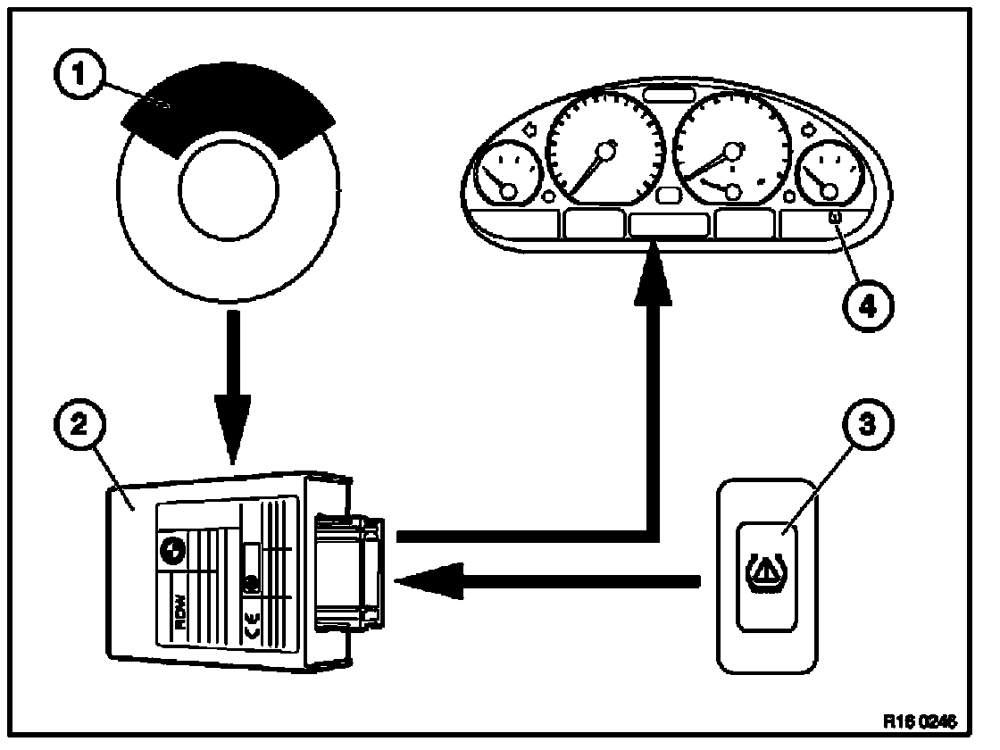
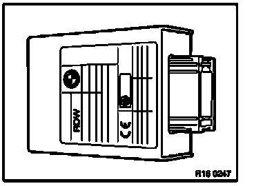
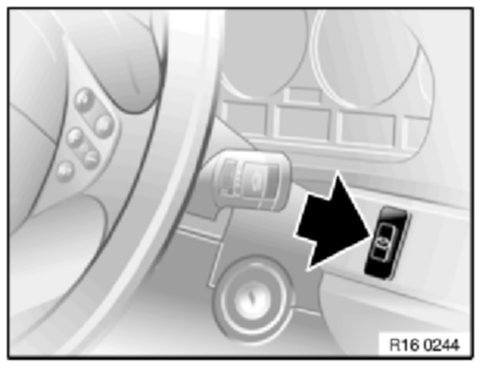
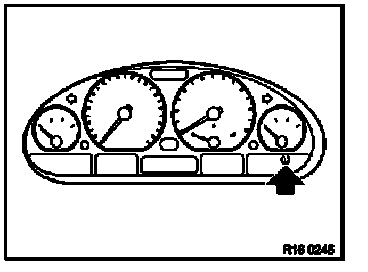

Tire Pressure Control (RDW)
Tyre pressure warning RDW
RDW system description
RDW measures the wheel speeds on all four wheels using the wheel speed sensors of the ABS/ASC or ABS/DSC system. It compares the wheel speeds of the diagonally opposite wheels and of the average speed.
In the event of a drop in tyre pressure the dynamic diameter of a wheel will change leading to a changed wheel speed.
A drop in tyre pressure of30 10% can be detected on all wheels from about 15km/h (10mph) up to the vehicle's top speed.
If this value is exceeded the driver will be warned via the instrument cluster as follows:
Loss of tyre pressure
Loss of tyre pressure of 30 ±10%
Warning
Red LED
Text "Tyre failure"
Gong: yes
The vehicle is not to be driven faster than 80 km/h (50 mph).
Note: A cautious driving style with moderate forward and transverse acceleration will help to prolong the service life of the defective tyre.
Advantages of RDW
With two exceptions the advantages of RDC also apply to RDW.
Excetions:
- no warning of loss oftyre pressure through normal diffusion
- tyre pressure still have to be checked regularly every 14 days
RDW system layout

1 Wheel speed sensors of ABS/ASC or ABS/DSC system
ASC = Automatic Stability Control
DSC = Dynamic Stability Control
2 RDW control unit
3 Set button
4 Display element
Component description
RDW control unit

Fully diagnosis-compatible
Task:
- evaluates wheel speeds.
- a warning is transmitted as required.
Set button

Installed in the dashboard to the right of the steering wheel. Symbol: tyre cross-section with warning triangle
Task: initialisation after resetting cold tyre pressure or after changing tyre or wheel location.
Display element in instrument cluster

Indicator lamp lights up red: - drop in tyre pressure 30 ±10%